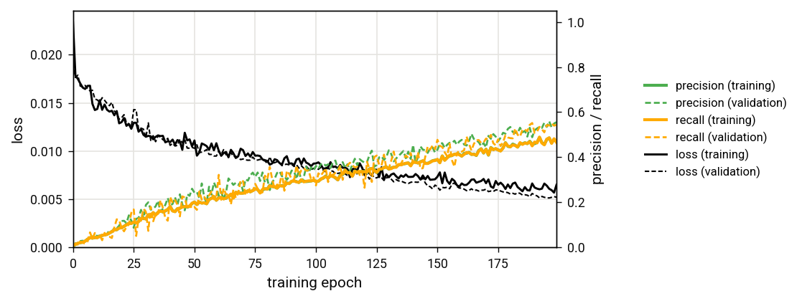
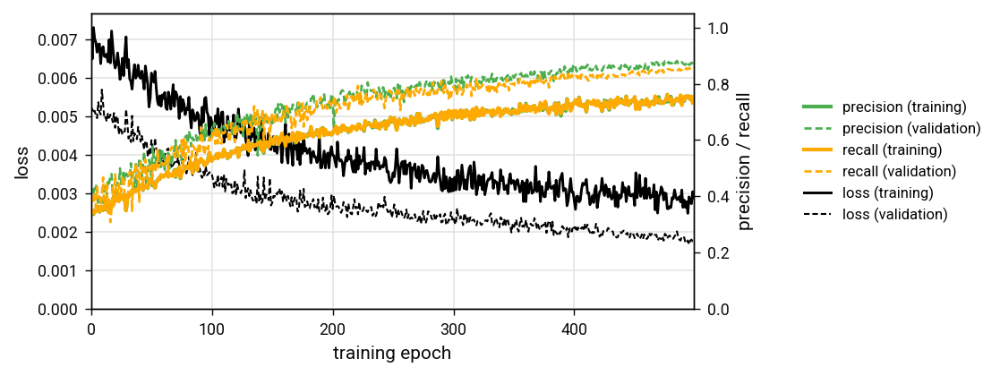
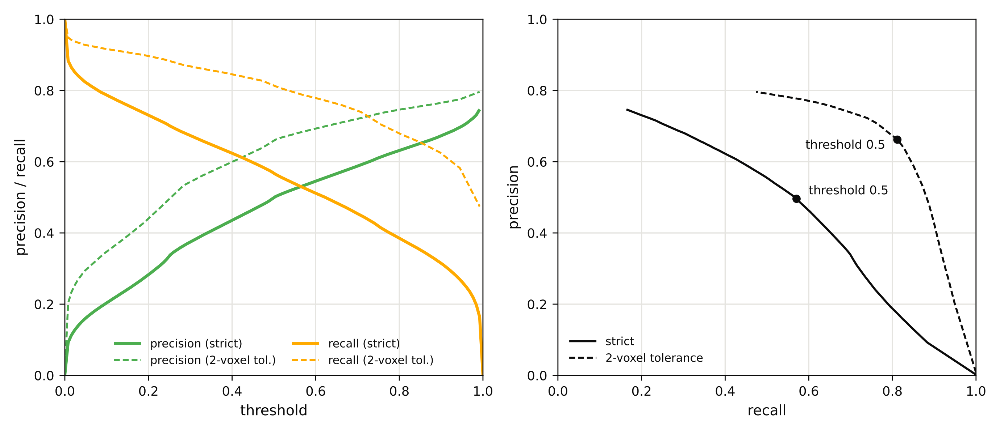

12. Training your own network
Example 12: training your own network
If you have training labels, you can use the easymode train command to train your own model. After training, if you copy the weights and metadata for your own model over into your easymode library cache (default ~/easymode/, see easymode set --cache-directory), you can call that model in the same way as you would use any other.
Before you decide to train your own easymode model, please read the considerations in the training documentation. The main point there is: if you just want a simple model that works for your own data, it is advisable to use Ais instead.
In training your own network, you can use labels from any source: a public database, simulated training data, your own tomograms with masks derived from template matching or manual picking, Ais training datasets, anything goes. You just have to format the training dataset correctly. In this tutorial, we will use tomograms and training labels for actin from EMPIAR-13326.
Step 1: preparing the training data
Before training, we need to save training data into the right format. We will download a subset of 8 tomograms from EMPIAR-13326 from the 6FP_control condition - leaving the other conditions to test the resulting network against. The below cli script can be used to download the volumes into tomograms/ and labels/ directories. Note: if you are following this tutorial because you want to use the resulting network for something, you should download all the training data that is available in this deposition. We only do a small subset just to make things faster.
BASE=https://ftp.ebi.ac.uk/empiar/world_availability/13326/data/6FP_control
TS="TS_90 TS_91 TS_94 TS_95 TS_96 TS_103 TS_104 TS_105"
mkdir -p tomograms labels
for t in $TS; do
n=${t}_6FP_control
wget -c -P tomograms $BASE/tomograms/${n}_rec.mrc
wget -c -P labels $BASE/labels/actin/${n}_actin.mrc
done
Next, we have to format this as easymode-compatible training data. The required format is explained here. In short, we should decide on i) a tile size for training and sample subtomogram training in/output pairs, and ii) a normalisation scheme.
Tile size: all 3D models in the model library were trained with a tile size of 160x160x160. On an A100 GPU, with 40 GB memory, this is a useful tile size: each tile contains a relatively large field of view, and you can fit multiple 160x160x160 samples onto one A100 card, so that the training batch size is not too small. However, 160x160x160-sized tiles consume a lot of memory during training, so for compatibility with smaller cards we will use a smaller tile size of 64x96x96. The first dimension is Z - we choose to make the tile size a little bit smaller in Z than in X and Y.
Normalisation scheme: the value distribution of input subtomograms during training should (approximately) match that of the tomograms seen during inference. Easymode can do two normalisation schemes during inference: global_mad (global normalisation using median absolute deviation) or local. In the first, full tomograms are normalized to zero mean and unit scale (scale factor being median absolute deviation * 1.4826). In the second, not the full tomogram but rather every individual tile is normalized this way. Which mode is used is determined by how a model was trained. We recommend the global scheme. To use it properly, we must ensure that the training subtomograms are indeed normalized according to this scheme - see the global_stats bit in the upcoming code segment.
The format of the training data is then as follows. In the directory that we will point at with easymode train --data training_data/, we have to write the training inputs and outputs to two different sub-directories:
training_data/
├── x_main/e63dba20.mrc
└── y/e63dba20.mrc
Using the script below, we sample non-overlapping 64x96x96 tiles from the central region (Z//2 - 32 to Z//2 + 32) of every tomogram and corresponding label volume. A little bit of overlap would not hurt training, but overlap between training samples plus the random selection of a validation split means that your validation metrics (which are printed during training) could be a little bit biased.
import os, glob, json, secrets, mrcfile, numpy as np
from easymode.segmentation.normalization import global_stats
TZ, TY, TX = 64, 96, 96
os.makedirs("training_data/x_main", exist_ok=True)
os.makedirs("training_data/y", exist_ok=True)
with open("training_data/metadata.json", "w") as f:
json.dump({"apix": 13.481, "apix_z": 13.481, "normalization": "global_mad"}, f)
for rec in sorted(glob.glob(f"tomograms/*_rec.mrc")):
name = os.path.basename(rec)[:-8]
with mrcfile.mmap(rec) as m:
nz, ny, nx = m.data.shape
c, s = global_stats(m.data)
z0 = (nz - TZ) // 2
x_vol = (np.array(m.data[z0:z0 + TZ]) - c) / s
with mrcfile.mmap(f"labels/{name}_actin.mrc") as m:
y_vol = np.array(m.data[z0:z0 + TZ])
for y in range(0, ny - TY + 1, TY):
for x in range(0, nx - TX + 1, TX):
uuid = secrets.token_hex(4)
for sub, vol in (("x_main", x_vol), ("y", y_vol)):
with mrcfile.new(f"training_data/{sub}/{uuid}.mrc", overwrite=True) as o:
o.set_data(vol[:, y:y + TY, x:x + TX].astype(np.float32))
o.voxel_size = 13.481
print(name, "done")
A deliberate mistake in this sampling
We are actually making a (deliberate) slight mistake in the sampling here. By sampling tiles only around the central Z area, we avoid including many 'empty' tiles sampled above and below the edges of the lamella. However, this means that the network does not get exposed to such empty image regions during training. As a result, which we will show in step 3, the segmentation output for the areas outside of the lamella is full of false positives. This is a typical example of why iterative training and testing is often required, especially when aiming for a general model: before testing, you never know what out-of-training-distribution samples your data may contain. It is hard to pre-empt all such cases, but it is easy to detect them during testing and then adapt your sampling approach. If you are following this tutorial because you want to actually use the resulting network, read Step 3 before continuing!
Step 2: training the model
With the training data in place, we only need to call easymode train:
easymode train --data training_data/ --title actin --size 64x96x96 --apix 13.48 --cache --bce 1.0 --dice 0.0 --xla --epochs 200
Tensorflow / CUDA issues?
If the above command does not work, try running it without the --xla flag. This flag tells Tensorflow to compile GPU code for your specific GPUs, rather than using a chain of general purpose operations. It can be much faster (up to 4.5x in our case), but is also more finnicky.
Although we saved tiles as 64x96x96 volumes, we need to specify a tile size again in the actual training call. You can use any tile size smaller than or equal to the size of the training samples on disk. When you choose a smaller size, randomly positioned sub-samples are cropped each time a training sample is served to the network, so that over many iterations the programme still does make use of all the data.
The value for the --apix argument gets written to the eventual model's metadata (.json) file. It determines the pixel size at which inference is done; tomograms are automatically resampled to this pixel size. It is the user's responsibility to ensure that the training samples are actually at this spacing; no automatic rescaling is used during training (although scale jitter is one of the augmentations that is used). We also wrote the pixel size to the training metadata, so including the argument in the training call is actually superfluous, but best to be clear.
The --cache argument tells the software to keep all the training data in RAM after first reading any of it. Without it, training tends to be limited by IO rather than by compute. In most cases we expect available RAM to be more than enough, so it is advised to use caching.
Training duration: on a node with four RTX 5090 GPUs, training took around 25 seconds per epoch, or about one and a half hours in total. For a real run it can be useful to set the number of epochs much larger, e.g. to 1000. The model weights ({title}.h5 plus its {title}.json metadata) and a training log (training_log.csv) are written to the output directory (default: ./{title}/). The weights are updated after every epoch in which the loss improves, so you can stop a run early — or already test the current model while training continues — and still have a usable network on disk.
Reading the metrics
After every epoch, easymode prints the loss, precision, and recall on the training data and on a held-out validation split. Healthy training looks like this: the training loss goes down; the validation loss also goes down (which matters more). Precision (fraction of network foreground output that is actual foreground) and recall (fraction of actual foreground that network correctly detected) often start out at zero and sit there for a while — with sparse targets, it takes some time before the network predicts anything useful at all — and then climb steadily. Expect the validation metrics to be noisier than the training metrics; they are computed on far fewer samples. Warning signs to watch for: the validation loss stalling or rising while the training loss keeps improving is a sign of overfitting. Negative loss values or precision larger than 1.0 means your training labels are outside of the allowed 0, 1, or 2 categories.

Training and validation loss, precision, and recall, for the 200 epoch training run.
Looking at the training metrics, we can see that training had not quite finished by the end of the 200th epoch: precision and recall were still moving up, loss was going down, and validation metrics look good (slightly better than the training metrics, which is because validation samples are not randomly augmented). It might be useful to continue training, which you would do by calling easymode train with --weights pointing at the actin.h5 that the previous run saved. For now, we will skip to testing.
Step 3: testing the model
To get the new model working with easymode segment, you can either copy it into the easymode weights cache at ~/easymode/ and then run easymode segment {title} (actin, in this case), or point at it directly with easymode segment --model. For a quick check we will just apply the model to the tomograms it was trained on:
easymode segment --model actin/actin.h5 --data tomograms/ --output segmented --tta 4
This took an average of 2 minutes per tomogram.
Output of the newly trained actin segmentation model, overlaid on one of the tomograms the network was trained on (tomogram denoised with the general n2n-style easymode denoiser, for visualization).
Just looking at this one tomogram, we can identify two problems: first, a lot of false positives are visible in the empty volume above and below the boundaries of the lamella. This is the result of the sampling issue described in the note above: because the network was not shown these void areas during training, output here is bad. A second issue is that the network also tenuously labels membranes, the sides of a microtubule, and some small densities in the cytoplasm as actin (albeit with a lower output value, so it is not too big of a problem). The second issue can be solved by further training, but the first requires us to improve the training data (or: you could mask the outside-lamella region using easymode segment void).
Step 4: improving the training data for a second iteration of training
We have to include additional training samples in the training data, specifically for those regions where the network output is poor. If you were to manually select and curate training subtomograms, you could include just a couple of boxes where the output is the worst. You could do this by opening the tomograms in Ais, placing actin boxes centred on where you want to extract subtomograms, and running ais extract -f actin -d tomograms/ -size 96 -depth 64 -a 13.48 -ou additional_samples/. But since we're sampling with our script, we will just randomly select some additional subtomograms from the bottom and top of the volumes.
import os, glob, json, secrets, random, mrcfile, numpy as np
from easymode.segmentation.normalization import global_stats
TZ, TY, TX = 64, 96, 96
N_SAVE = 400
os.makedirs("additional_samples/x_main", exist_ok=True)
os.makedirs("additional_samples/y", exist_ok=True)
with open("additional_samples/metadata.json", "w") as f:
json.dump({"apix": 13.481, "apix_z": 13.481, "normalization": "global_mad"}, f)
random.seed(0)
tomograms = sorted(glob.glob("tomograms/*_rec.mrc"))
per_slab = N_SAVE // (2 * len(tomograms))
for rec in tomograms:
name = os.path.basename(rec)[:-8]
with mrcfile.mmap(rec) as m:
nz, ny, nx = m.data.shape
c, s = global_stats(m.data)
z_offsets = (0, nz - TZ)
x_slabs = [(np.array(m.data[z0:z0 + TZ]) - c) / s for z0 in z_offsets]
with mrcfile.mmap(f"labels/{name}_actin.mrc") as m:
y_slabs = [np.array(m.data[z0:z0 + TZ]) for z0 in z_offsets]
for x_vol, y_vol in zip(x_slabs, y_slabs):
grid = [(y, x) for y in range(0, ny - TY + 1, TY) for x in range(0, nx - TX + 1, TX)]
random.shuffle(grid)
for y, x in grid[:per_slab]:
uuid = secrets.token_hex(4)
for sub, vol in (("x_main", x_vol), ("y", y_vol)):
with mrcfile.new(f"additional_samples/{sub}/{uuid}.mrc", overwrite=True) as o:
o.set_data(vol[:, y:y + TY, x:x + TX].astype(np.float32))
o.voxel_size = 13.481
print(name, "done")
After running this we have two directories with training data: training_data/ and additional_samples/.
Step 5: refining the model
To refine the previously trained model, run:
easymode train --title actin_v2 --data training_data/ additional_samples/ --size 64x96x96 --cache --bce 1.0 --dice 0.0 --weights actin/actin.h5 --xla --epochs 500
This run took about 6 hours, at 49 seconds per epoch, using four RTX 4090s, which were a little bit slower than the 5090s used previously.

Training metrics for the second training run. Loss, precision, and recall start out good due to the pretraining, but worse than where they ended up in the first training run. This is because we use just the weights to initialize the new run, rather than the full optimizer state from the end of the last run.
That same tomogram from before now looks a lot cleaner:
Output of the refined model on the same tomogram, after adding the empty top and bottom regions to the training data.
Step 6: testing the model on unseen data
That the segmentations look good for a tomogram the network was trained on isn't very surprising. The better test is to use the network to segment an unseen tomogram. We'll download a tomogram from the related 6FP_induced condition of EMPIAR-13326.
BASE=https://ftp.ebi.ac.uk/empiar/world_availability/13326/data/6FP_induced
mkdir -p test/tomograms test/labels
wget -c -P test/tomograms $BASE/tomograms/TS_111_6FP_induced_rec.mrc
wget -c -P test/labels $BASE/labels/actin/TS_111_6FP_induced_actin.mrc
Then segment it:
easymode segment --model actin_v2/actin_v2.h5 --data test/tomograms --output test/segmented
A visual check
Predicted (left, green) and original deposition (right, orange) actin labels for a tomogram excluded from the training data.
Before we do a quantitative measurement of the segmentation accuracy, we can see a couple of things in the visualizations above. First, the network output is a little bit patchy compared to the reference labels. Long, continuous filaments in the reference labels (orange) sometimes have gaps in the network output (green). We could think of this as a failure - and maybe it is - but it is important to realize that these reference labels are not perfect (although they are very good, especially for something as difficult to label as actin). Unless you are working with simulated data, 'ground truth' does not really exist in cryoET.
Second, there are two large filament bundles in the segmentation output that were not included in the original labels. Looking at the original tomogram (see below), we are fairly sure that these are indeed actin filament bundles - we would have annotated them as such. For the original study these filaments, which appear to be in podosomes of cells whose bulk is not visible in the tomogram, may not have been relevant, so it makes sense that the authors did not include labels for them. However, if the training tomograms also contained unlabelled filaments like these, this ambiguity would have hurt training: if one true actin filament is labelled as foreground, and another as background, there is no genuine solution that the network can learn - it could only eventually solve this by overfitting. In practice, as long as the fraction of false negatives in the training data isn't too high, you'll be fine.
The unseen tomogram itself (TS_111, 6FP_induced), scrolling through Z.
A quantitative check
During training we monitor precision and recall. Now that we have a test set with 'ground truth' labels, we can calculate the network's precision and recall on this data. Precision is the fraction of what the network says is actin, that is actually labelled as actin in the original annotations. It is calculated as true positive / (true positive + false positive). Recall is the fraction of the voxels labelled as actin in the original annotations that the network correctly identified. It is calculated as true positive / (true positive + false negative).
Values for precision and recall, and for various other metrics, are very dependent on the geometry of the feature of interest. For something large and contiguous, like mitochondria, a good model's output and the test labels will be mostly in agreement, except perhaps at the edges of the mask. Because the area of a mitochondrion is very large, this translates into high precision and recall scores. For a hard target, like actin, precision and recall are typically lower. Even if a good model fully segments a filament, if for some reason it is off-center by one voxel, that is a significant error because the filament itself has only a few-voxel diameter. Metrics like these have their uses, but in our opinion the best way to assess a model's performance is by looking at the utility it offers for your workflow.
That said, we calculate the precision (P) and recall (R) for the output shown above. P and R are measured with binary labels, so we need to threshold the segmentation output (value range 0.0 - 1.0) before we calculate them. In the figure below: left, a plot of the precision and recall vs. binarization threshold; right: precision plotted vs. recall. In both cases we plot the 'raw' P/R, measured as described above, and a second measurement where we used a 2-voxel tolerance (meaning: if model says 'actin' and reference says 'background', but somewhere within a 2-voxel radius the reference does say 'actin', we count it as a win.). The curves show the typical tradeoff of increasing the threshold: a high threshold ensures that you have fewer false positives, at the cost of false negatives, and vice versa. As always, what's good depends on what you want to use the model for.

Left: precision and recall versus threshold. Right: precision versus recall, for a threshold range from 0.0 to 1.0.
Some tips & tricks
The approach taken in this tutorial isn't necessarily the best: we chose to use 64x96x96 boxes so that training wouldn't take too long, and we chose to initially sample the tomograms a little bit 'naively' in order to demonstrate the re-training from existing weights and the need to iteratively test and improve models. In general, we would advise to:
- Use large boxes: 160x160x160 works well, or if your data isn't that large in Z, 128x160x160 or 128x192x192. If your GPUs have memory for even larger boxes, use that. Larger boxes work best because the receptive field of the default network is over 440 voxels in every axis. This means that for any voxel-level decision (i.e. 'is this voxel in an actin filament or not?'), the network could in principle factor in information from over 220 voxels away. When training at 64x96x96, the spatial context in the training samples is much smaller than the actual receptive field. Because of that, not all available capacity of the network will be utilized. For actin this may not be super important - a 64x96x96 box at ~13.5 Å/px still provides about 40 nm of context in Z, and 65 nm in X and Y, for the central voxel. If you do want to train with small boxes, consider using the
unet-membrain-groupnorm-litearchitecture instead: it has one downsampling level fewer, which brings the receptive field down to 219 voxels and the parameter count down about fourfold. - Easymode networks use group normalization to keep the activations inside the network well-scaled during training. In Ais and earlier iterations of easymode, we used batch normalization instead. With batch normalization, during every training step, each channel is normalized by the mean and standard deviation measured across all the samples in the batch. This works well and makes training converge faster, but it becomes a problem when the batch size is small. The largest possible training box size ends up requiring training with 1 box per GPU, and a mean and standard deviation measured over a single sample is far too noisy to normalize by. Group normalization instead measures those statistics within each sample, over groups of channels, so the normalization itself no longer depends on how many samples are in a batch. That does not make batch size unimportant - a gradient computed from just a few samples is still a noisier estimate of the right update than one computed from thirty-two, and small batches generally want a lower learning rate - but at least the normalization no longer degrades along with it. So: it is not necessarily a problem to train with a batch size of 1 per GPU.
- Make sure your training boxes are normalized the same way that inference will normalize tomograms. When training appears to run well, but segmentation output is horrible, it is most often because of a wrong normalization scheme. Be sure to read and understand the two normalization schemes in the training documentation.
- Show the network the boring parts of your data too. It is tempting to sample training boxes only where your feature of interest is, but a network that has only ever seen cytoplasm has no idea what to do with the empty volume outside a lamella, fiducials, ice contamination - and it will happily label them as your feature.
- Judge a model by looking at its output, not by any training metrics. Segment some test tomograms and inspect the results. Use Pom if you want to do this at scale. Second, judge the results by whether they are useful for your downstream goal. If you're only doing visualization, 90% good output + some manual editing in ChimeraX could be fine. If you're doing picking for subtomogram averaging, high recall but low precision might be fine, depending on your STA strategy.
- It can help to include multiple different tomogram 'flavours' in the training data. If you train on data you want to apply the network to, this isn't necessary; but if you want your network to generalize beyond the data you already have sparse labels for, flavour-mixing helps. This means: besides your
rawtomogram, use a denoiser to generatedenoisedversions of the same tomogram. Witheasymode denoise --method {n2n, ddw, iso}you can generate Noise2Noise-, DeepDeWedge-, and IsoNet2-style variants without training. You can also includeevenandoddhalf splits, split either by frame or by tilt - although these are also unrealistically noisy, so include them only if you also have a substantial number of higher signal to noise flavours. During training, theflavour mixingaugmentation generates randomly mixed combinations of the input variants. This helps expose the network to different preprocessing styles and noise levels and to achieve better generalisation. The required training data format is explained here.